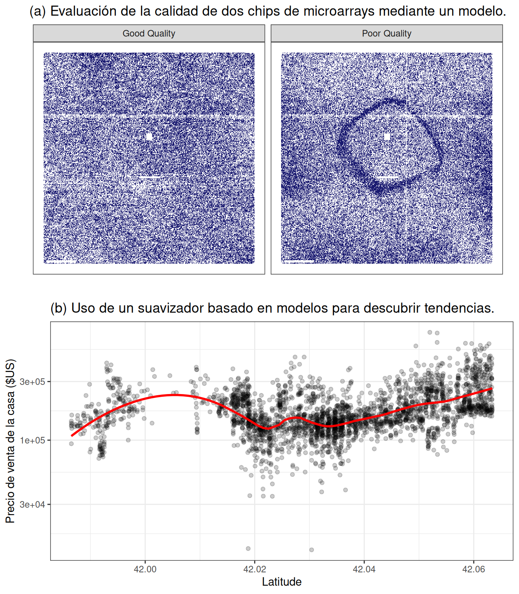
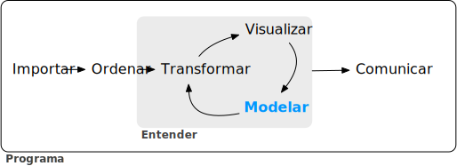
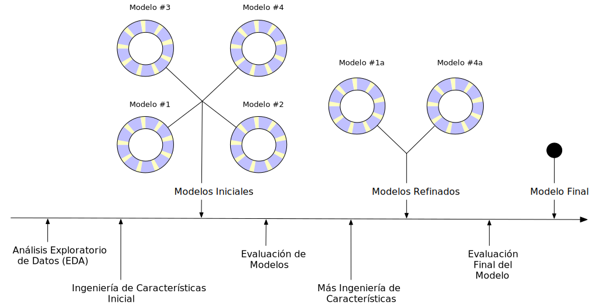

1 Software Para Modelar
Los modelos son herramientas matemáticas que pueden describir un sistema y capturar relaciones en los datos que se les proporcionan. Los modelos se pueden utilizar para diversos fines, incluida la predicción de eventos futuros, determinar si hay una diferencia entre varios grupos, ayudar en la visualización basada en mapas, descubrir patrones novedosos en los datos que podrían investigarse más a fondo y más. La utilidad de un modelo depende de su capacidad para ser reductivo o para reducir relaciones complejas a términos más simples. Las influencias principales en los datos se pueden capturar matemáticamente de una manera útil, como en una relación que se puede expresar como una ecuación.
Desde principios del siglo XXI, los modelos matemáticos se han vuelto omnipresentes en nuestra vida diaria, tanto de manera obvia como sutil. Un día típico para muchas personas puede implicar consultar el clima para ver cuándo podría ser un buen momento para pasear al perro, pedir un producto en un sitio web, escribir un mensaje de texto a un amigo y corregirlo automáticamente, y consultar el correo electrónico. En cada uno de estos casos, existe una buena probabilidad de que haya estado involucrado algún tipo de modelo. En algunos casos, la contribución del modelo puede percibirse fácilmente (“Es posible que también esté interesado en comprar el producto X”), mientras que en otros casos, el impacto podría ser la ausencia de algo (por ejemplo, correo electrónico no deseado). Los modelos se utilizan para elegir la ropa que podría gustarle a un cliente, para identificar una molécula que debería evaluarse como candidata a fármaco e incluso podrían ser el mecanismo que utiliza una empresa nefasta para evitar el descubrimiento de automóviles que contaminan demasiado. Para bien o para mal, los modelos llegaron para quedarse.
Hay dos razones por las que los modelos impregnan nuestras vidas hoy en día:
existe una gran cantidad de software para crear modelos, y
se ha vuelto más fácil capturar y almacenar datos, así como hacerlos accesibles.
Este libro se centra principalmente en el software. Obviamente, es fundamental que el software produzca las relaciones correctas para representar los datos. En general, es posible determinar la corrección matemática, pero la creación fiable de modelos apropiados requiere más. En este capítulo, describimos consideraciones para crear o elegir software de modelado, los propósitos de los modelos y dónde se ubica el modelado en el proceso más amplio de análisis de datos.
1.1 Fundamentos Del Software De Modelado
Es importante que el software de modelado que utilice sea fácil de utilizar correctamente. La interfaz de usuario no debe estar tan mal diseñada que el usuario no sepa que la utilizó de manera inapropiada. Por ejemplo, Baggerly y Coombes (2009) informa innumerables problemas en los análisis de datos de una publicación de biología computacional de alto perfil. Uno de los problemas estaba relacionado con cómo se requería que los usuarios agregaran los nombres de las entradas del modelo. La interfaz de usuario del software facilitó la compensación de los nombres de las columnas de datos de las columnas de datos reales. Esto dio lugar a que se identificaran genes equivocados como importantes para el tratamiento de pacientes con cáncer y, finalmente, contribuyó a la interrupción de varios ensayos clínicos. (Carlson 2012).
Si necesitamos modelos de alta calidad, el software debe facilitar su uso adecuado. Abrams (2003) describe un principio interesante para guiarnos:
El pozo del éxito: en marcado contraste con una cumbre, un pico o un viaje a través de un desierto para encontrar la victoria a través de muchas pruebas y sorpresas, queremos que nuestros clientes simplemente adopten prácticas ganadoras utilizando nuestra plataforma y marcos.
El software de análisis y modelado de datos debería abrazar esta idea.
En segundo lugar, el software de modelado debería promover una buena metodología científica. Cuando se trabaja con modelos predictivos complejos, puede resultar fácil cometer errores, sin saberlo, relacionados con falacias lógicas o suposiciones inapropiadas. Muchos modelos de aprendizaje automático son tan hábiles en descubrir patrones que pueden encontrar sin esfuerzo patrones empíricos en los datos que no logran reproducir más adelante. Algunos de los errores metodológicos son insidiosos en el sentido de que el problema puede pasar desapercibido hasta un momento posterior, cuando se obtienen nuevos datos que contienen el resultado verdadero.
A medida que nuestros modelos se han vuelto más poderosos y complejos, también se ha vuelto más fácil cometer errores latentes.
Este mismo principio también se aplica a la programación. Siempre que sea posible, el software debería poder proteger a los usuarios de cometer errores. El software debería facilitar a los usuarios hacer lo correcto.
Estos dos aspectos del desarrollo de modelos (facilidad de uso adecuado y buenas prácticas metodológicas) son cruciales. Dado que las herramientas para crear modelos son fácilmente accesibles y los modelos pueden tener un impacto tan profundo, muchas más personas los están creando. En términos de experiencia técnica y capacitación, los antecedentes de los creadores variarán. Es importante que sus herramientas sean sólidas para la experiencia del usuario. Las herramientas deben ser lo suficientemente potentes como para crear modelos de alto rendimiento, pero, por otro lado, deben ser fáciles de utilizar de forma adecuada. Este libro describe un conjunto de software para modelado que ha sido diseñado teniendo en cuenta estas características.
El software está basado en el lenguaje de programación R (R Core Team 2014). R ha sido diseñado especialmente para el análisis y modelado de datos. Es una implementación del lenguaje S (con reglas de alcance léxico adaptadas de Scheme y Lisp) que se creó en la década de 1970 para
“convertir ideas en software, de forma rápida y fiel” (Chambers 1998)
R es de código abierto y gratuito. Es un poderoso lenguaje de programación que se puede utilizar para muchos propósitos diferentes, pero se especializa en análisis de datos, modelado, visualización y aprendizaje automático. R es fácilmente extensible; Tiene un vasto ecosistema de paquetes, en su mayoría módulos aportados por los usuarios que se centran en un tema específico, como modelado, visualización, etc.
Una colección de paquetes se llama tidyverse (Wickham et al. 2019). Tidyverse es una colección obstinada de paquetes R diseñados para la ciencia de datos. Todos los paquetes comparten una filosofía de diseño, gramática y estructuras de datos subyacentes. Varias de estas filosofías de diseño están directamente informadas por los aspectos del software para modelado descritos en este capítulo. Si nunca ha usado los paquetes tidyverse, el Capítulo 2 contiene una revisión de los conceptos básicos. Dentro de tidyverse, el subconjunto de paquetes centrados específicamente en el modelado se conoce como paquetes tidymodels. Este libro es una guía práctica para realizar modelados utilizando los paquetes tidyverse y tidymodels. Muestra cómo utilizar un conjunto de paquetes, cada uno con su propósito específico, juntos para crear modelos de alta calidad.
1.2 Tipos De Modelos
Antes de continuar, describamos una taxonomía de tipos de modelos, agrupados por propósito. Esta taxonomía informa tanto cómo se utiliza un modelo como muchos aspectos de cómo se puede crear o evaluar el modelo. Si bien esta lista no es exhaustiva, la mayoría de los modelos caen en al menos una de estas categorías:
Modelos descriptivos
El propósito de un modelo descriptivo es describir o ilustrar las características de algunos datos. Es posible que el análisis no tenga otro propósito que enfatizar visualmente alguna tendencia o artefacto en los datos.
Por ejemplo, desde hace algún tiempo es posible realizar mediciones de ARN a gran escala utilizando microarrays. Los primeros métodos de laboratorio colocaban una muestra biológica en un pequeño microchip. Ubicaciones muy pequeñas en el chip pueden medir una señal basada en la abundancia de una secuencia de ARN específica. El chip contendría miles (o más) de resultados, cada uno de los cuales sería una cuantificación del ARN relacionado con un proceso biológico. Sin embargo, podría haber problemas de calidad en el chip que podrían provocar malos resultados. Por ejemplo, una huella digital dejada accidentalmente en una parte del chip podría provocar mediciones inexactas al escanearla.
Uno de los primeros métodos para evaluar estas cuestiones fueron los modelos a nivel de sonda, o PLM (Bolstad 2004). Se crearía un modelo estadístico que tuviera en cuenta las diferencias conocidas en los datos, como el chip, la secuencia de ARN, el tipo de secuencia, etc. Si hubiera otros factores desconocidos en los datos, estos efectos se capturarían en los residuos del modelo. Cuando los residuos se trazaron según su ubicación en el chip, un chip de buena calidad no mostraría patrones. Cuando ocurría un problema, se podía discernir algún tipo de patrón espacial. A menudo, el tipo de patrón sugeriría el problema subyacente (por ejemplo, una huella digital) y una posible solución (limpiar el chip y volver a escanear, repetir la muestra, etc.). Figura 1.1 (a) muestra una aplicación de este método para dos microarrays tomados de Gentleman et al. (2005). Las imágenes muestran dos valores de color diferentes; Las áreas más oscuras son aquellas donde la intensidad de la señal fue mayor de lo esperado por el modelo, mientras que el color más claro muestra valores inferiores a los esperados. El panel de la izquierda muestra un patrón bastante aleatorio, mientras que el panel de la derecha muestra un artefacto indeseable en el medio del chip.
Otro ejemplo de modelo descriptivo es el modelo de suavizado de diagrama de dispersión estimado localmente, más comúnmente conocido como LOESS (Cleveland 1979). En este caso, se ajusta un modelo de regresión suave y flexible a un conjunto de datos, generalmente con una única variable independiente, y se utiliza la línea de regresión ajustada para dilucidar alguna tendencia en los datos. Estos tipos de suavizadores se utilizan para descubrir formas potenciales de representar una variable en un modelo. Esto se demuestra en Figura 1.1 (b), donde el suavizador flexible ilumina una tendencia no lineal. De este gráfico se desprende claramente que existe una relación altamente no lineal entre el precio de venta de una casa y su latitud.
Modelos inferenciales
El objetivo de un modelo inferencial es producir una decisión para una pregunta de investigación o explorar una hipótesis específica, de forma similar a cómo se utilizan las pruebas estadísticas.1 Un modelo inferencial comienza con una conjetura o idea predefinida sobre una población y produce una conclusión estadística como una estimación de intervalo o el rechazo de una hipótesis.
Por ejemplo, el objetivo de un ensayo clínico podría ser confirmar que una nueva terapia logra prolongar la vida mejor que una alternativa, como una terapia existente o ningún tratamiento. Si el criterio de valoración clínico se relaciona con la supervivencia de un paciente, la hipótesis nula podría ser que el nuevo tratamiento tiene una mediana de supervivencia igual o menor, siendo la hipótesis alternativa que la nueva terapia tiene una mediana de supervivencia más alta. Si este ensayo se evaluara utilizando pruebas de significancia de hipótesis nulas tradicionales mediante modelado, la prueba de significancia produciría un valor p usando alguna metodología predefinida basada en un conjunto de suposiciones para los datos. Valores pequeños para el valor p en los resultados del modelo indicarían que hay evidencia de que la nueva terapia ayuda a los pacientes a vivir más tiempo. Valores grandes para el valor p en los resultados del modelo concluirían que no se puede mostrar tal diferencia; Esta falta de evidencia podría deberse a varias razones, incluida la terapia que no funciona.
¿Cuáles son los aspectos importantes de este tipo de análisis? Las técnicas de modelado inferencial suelen producir algún tipo de resultado probabilístico, como un valor p, un intervalo de confianza o una probabilidad posterior. Generalmente, para calcular tal cantidad, se deben hacer supuestos probabilísticos formales sobre los datos y los procesos subyacentes que generaron los datos. La calidad de los resultados del modelado estadístico depende en gran medida de estos supuestos predefinidos, así como de hasta qué punto los datos observados parecen coincidir con ellos. Los factores más críticos aquí son teóricos: “Si mis datos fueran independientes y los residuos siguieran la distribución X, entonces el estadístico de prueba Y se puede utilizar para producir un valor p. De lo contrario, el valor p resultante podría ser inexacto.”
Un aspecto de los análisis inferenciales es que tiende a haber un ciclo de retroalimentación retardada en la comprensión de qué tan bien coinciden los datos con los supuestos del modelo. En nuestro ejemplo de ensayo clínico, si la significación estadística (y clínica) indica que la nueva terapia debería estar disponible para que la utilicen los pacientes, aún pueden pasar años antes de que se utilice en el campo y se generen suficientes datos para una evaluación independiente de si el análisis estadístico original condujo a la decisión adecuada.
Modelos predictivos
A veces, los datos se modelan para producir la predicción más precisa posible para datos nuevos. Aquí, el objetivo principal es que los valores predichos tengan la mayor fidelidad posible al valor real de los nuevos datos.
Un ejemplo sencillo sería que un comprador de libros predijera cuántas copias de un libro en particular debería enviar a su tienda durante el próximo mes. Una predicción excesiva desperdicia espacio y dinero debido al exceso de libros. Si la predicción es menor de lo que debería ser, hay pérdida de oportunidades y menos ganancias.
Para este tipo de modelo, el tipo de problema es de estimación más que de inferencia. Por ejemplo, al comprador normalmente no le preocupa una pregunta como “¿Venderé más de 100 copias del libro X el próximo mes?” sino “¿Cuántas copias del libro X comprarán los clientes el próximo mes?” Además, dependiendo del contexto, puede que no haya ningún interés en saber por qué el valor previsto es X. En otras palabras, hay más interés en el valor en sí que en evaluar una hipótesis formal relacionada con los datos. La predicción también puede incluir medidas de incertidumbre. En el caso del comprador de libros, proporcionar un error de pronóstico puede resultar útil para decidir cuántos libros comprar. También puede servir como métrica para evaluar qué tan bien funcionó el método de predicción.
¿Cuáles son los factores más importantes que afectan los modelos predictivos? Hay muchas formas diferentes de crear un modelo predictivo, por lo que los factores importantes dependen de cómo se desarrolló el modelo.2
Se podría derivar un modelo mecanicista utilizando primeros principios para producir una ecuación modelo que dependa de suposiciones. Por ejemplo, al predecir la cantidad de una droga que hay en el cuerpo de una persona en un momento determinado, se hacen algunas suposiciones formales sobre cómo se administra, absorbe, metaboliza y elimina la droga. En base a esto, se puede utilizar un conjunto de ecuaciones diferenciales para derivar una ecuación modelo específica. Los datos se utilizan para estimar los parámetros desconocidos de esta ecuación para poder generar predicciones. Al igual que los modelos inferenciales, los modelos predictivos mecanicistas dependen en gran medida de los supuestos que definen las ecuaciones de sus modelos. Sin embargo, a diferencia de los modelos inferenciales, es fácil hacer afirmaciones basadas en datos sobre qué tan bien se desempeña el modelo en función de qué tan bien predice los datos existentes. Aquí el ciclo de retroalimentación para el practicante de modelos es mucho más rápido de lo que sería para una prueba de hipótesis.
Modelos impulsados empíricamente se crean con suposiciones más vagas. Estos modelos tienden a caer en la categoría de aprendizaje automático. Un buen ejemplo es el modelo K-vecino más cercano (KNN). Dado un conjunto de datos de referencia, se predice una nueva muestra utilizando los valores de los K datos más similares en el conjunto de referencia. Por ejemplo, si un comprador de libros necesita una predicción para un libro nuevo, es posible que haya disponibles datos históricos de libros existentes. Un modelo de cinco vecinos más cercanos estimaría el número de libros nuevos a comprar basándose en las cifras de ventas de los cinco libros que son más similares al nuevo (para alguna definición de “similar”). Este modelo se define únicamente por la estructura de la predicción (el promedio de cinco libros similares). No se hacen suposiciones teóricas o probabilísticas sobre las cifras de ventas o las variables que se utilizan para definir la similitud. De hecho, el método principal para evaluar la idoneidad del modelo es evaluar su precisión utilizando datos existentes. Si la estructura de este tipo de modelo fuera una buena elección, las predicciones se aproximarían a los valores reales.
1.3 Conexiones Entre Tipos De Modelos
Tenga en cuenta que hemos definido el tipo de modelo por cómo se utiliza, más que por sus cualidades matemáticas.
Un modelo de regresión lineal ordinario podría pertenecer a cualquiera de estas tres clases de modelos, dependiendo de cómo se utilice:
Se puede utilizar un suavizador descriptivo, similar a LOESS, llamado splines de suavizado restringido (Durrleman y Simon 1989) para describir tendencias en datos usando regresión lineal ordinaria con términos especializados.
Un modelo de análisis de varianza (ANOVA) es un método popular para producir los valores p utilizados para la inferencia. Los modelos ANOVA son un caso especial de regresión lineal.
Si un modelo de regresión lineal simple produce predicciones precisas, puede utilizarse como modelo predictivo.
Hay muchos ejemplos de modelos predictivos que no pueden (o al menos no deberían) usarse para inferencias. Incluso si se hicieran suposiciones probabilísticas para los datos, la naturaleza del modelo K de vecinos más cercanos, por ejemplo, hace que las matemáticas necesarias para la inferencia sean intratables.
Existe una conexión adicional entre los tipos de modelos. Si bien el propósito principal de los modelos descriptivos e inferenciales puede no estar relacionado con la predicción, no se debe ignorar la capacidad predictiva del modelo. Por ejemplo, la regresión logística es un modelo popular para datos en los que el resultado es cualitativo con dos valores posibles. Puede modelar cómo se relacionan las variables con la probabilidad de los resultados. Cuando se utiliza de manera inferencial, se presta mucha atención a las cualidades estadísticas del modelo. Por ejemplo, los analistas tienden a centrarse fuertemente en la selección de variables independientes contenidas en el modelo. Se pueden utilizar muchas iteraciones de la construcción de modelos para determinar un subconjunto mínimo de variables independientes que tengan una relación “estadísticamente significativa” con la variable de resultado. Esto generalmente se logra cuando todos los valores p de las variables independientes están por debajo de cierto valor (por ejemplo, 0,05). A partir de aquí, el analista puede centrarse en hacer afirmaciones cualitativas sobre la influencia relativa que tienen las variables en el resultado (por ejemplo, “Existe una relación estadísticamente significativa entre la edad y las probabilidades de enfermedad cardíaca”).
Sin embargo, este enfoque puede resultar peligroso cuando se utiliza la significación estadística como única medida de la calidad del modelo. Es posible que este modelo estadísticamente optimizado tenga una precisión deficiente o que tenga un desempeño deficiente en alguna otra medida de capacidad predictiva. Si bien es posible que el modelo no se utilice para la predicción, ¿cuánto se debe confiar en las inferencias de un modelo que tiene valores p significativos pero una precisión lamentable? El rendimiento predictivo tiende a estar relacionado con qué tan cerca están los valores ajustados del modelo a los datos observados.
Si un modelo tiene una fidelidad limitada a los datos, las inferencias generadas por el modelo deberían ser muy sospechosas. En otras palabras, la significancia estadística puede no ser prueba suficiente de que un modelo es apropiado.
Esto puede parecer intuitivamente obvio, pero a menudo se ignora en el análisis de datos del mundo real.
1.4 Terminología
Antes de continuar, describiremos terminología adicional relacionada con el modelado y los datos. Estas descripciones pretenden ser útiles a medida que lee este libro, pero no son exhaustivas.
En primer lugar, muchos modelos pueden clasificarse como supervisados o no supervisados. Los modelos no supervisados son aquellos que aprenden patrones, grupos u otras características de los datos pero carecen de un resultado, es decir, una variable dependiente. El análisis de componentes principales (PCA), la agrupación en clústeres y los codificadores automáticos son ejemplos de modelos no supervisados; se utilizan para comprender las relaciones entre variables o conjuntos de variables sin una relación explícita entre los predictores y un resultado. Los modelos supervisados son aquellos que tienen una variable de resultado. La regresión lineal, las redes neuronales y muchas otras metodologías entran en esta categoría.
Dentro de los modelos supervisados, hay dos subcategorías principales:
Regresión predice un resultado numérico.
Clasificación predice un resultado que es un conjunto ordenado o desordenado de valores cualitativos.
Estas son definiciones imperfectas y no tienen en cuenta todos los tipos de modelos posibles. En el Capítulo 6, nos referimos a esta característica de las técnicas supervisadas como modo modelo.
Diferentes variables pueden tener diferentes roles, especialmente en un análisis de modelado supervisado. Los resultados (también conocidos como etiquetas, criterios de valoración o variables dependientes) son el valor que se predice en los modelos supervisados. Las variables independientes, que son el sustrato para hacer predicciones del resultado, también se denominan predictores, características o covariables (según el contexto). Los términos resultados y predictores se utilizan con mayor frecuencia en este libro.
En términos de los datos o variables en sí, ya sea que se utilicen para modelos supervisados o no supervisados, como predictores o resultados, las dos categorías principales son cuantitativas y cualitativas. Ejemplos del primero son números reales como “3.14159” y números enteros como “42”. Los valores cualitativos, también conocidos como datos nominales, son aquellos que representan algún tipo de estado discreto que no se puede ubicar naturalmente en una escala numérica, como “rojo”, “verde” y “azul”.
1.5 ¿Cómo Encaja El Modelado En El Proceso De Análisis de Datos?
¿En qué circunstancias se crean los modelos? ¿Hay pasos que preceden a tal empresa? ¿Es la creación de modelos el primer paso en el análisis de datos?
Hay algunas fases críticas del análisis de datos que siempre vienen antes del modelado.
En primer lugar, está el proceso crónicamente subestimado de limpiar los datos. Independientemente de las circunstancias, debe investigar los datos para asegurarse de que sean aplicables a los objetivos de su proyecto, precisos y apropiados. Estos pasos fácilmente pueden llevar más tiempo que el resto del proceso de análisis de datos (según las circunstancias).
La limpieza de datos también puede superponerse con la segunda fase de comprensión de los datos, a menudo denominada análisis de datos exploratorios (EDA). EDA saca a la luz cómo se relacionan las diferentes variables entre sí, sus distribuciones, rangos típicos y otros atributos. Una buena pregunta para hacer en esta fase es: “¿Cómo obtuve estos datos?” Esta pregunta puede ayudarle a comprender cómo se muestrearon o filtraron los datos disponibles y si estas operaciones fueron apropiadas. Por ejemplo, al fusionar tablas de bases de datos, una unión puede salir mal y eliminar accidentalmente una o más subpoblaciones. Otra buena idea es preguntar si los datos son relevantes. Por ejemplo, para predecir si los pacientes tienen la enfermedad de Alzheimer, no sería prudente tener un conjunto de datos que contenga sujetos con la enfermedad y una muestra aleatoria de adultos sanos de la población general. Dada la naturaleza progresiva de la enfermedad, el modelo puede simplemente predecir quiénes son los pacientes de mayor edad.
Finalmente, antes de iniciar un proceso de análisis de datos, deben existir expectativas claras sobre el objetivo del modelo y cómo se juzgará el desempeño (y el éxito). Se debe identificar al menos una métrica de desempeño con objetivos realistas de lo que se puede lograr. Las métricas estadísticas comunes, que se analizan con más detalle en el Capítulo 9, son la precisión de la clasificación, las tasas de verdaderos y falsos positivos, el error cuadrático medio, etc. Deben sopesarse los beneficios y desventajas relativos de estas métricas. También es importante que la métrica sea pertinente; la alineación con los objetivos más amplios del análisis de datos es fundamental.
El proceso de investigación de los datos puede no ser sencillo. Wickham y Grolemund (2016) contiene una excelente ilustración del proceso general de análisis de datos, reproducida en Figura 1.2. La ingesta de datos y la limpieza/ordenamiento se muestran como pasos iniciales. Cuando comienzan los pasos analíticos para la comprensión, son un proceso heurístico; No podemos predeterminar cuánto tiempo pueden tardar. El ciclo de transformación, modelado y visualización a menudo requiere múltiples iteraciones.

Este proceso iterativo es especialmente cierto para el modelado. Figura 1.3 emula la ruta típica para determinar un modelo apropiado. Las fases generales son:
Análisis de datos exploratorios (EDA): Inicialmente hay un vaivén entre el análisis numérico y la visualización de datos (representado en Figura 1.2) donde diferentes descubrimientos conducen a más preguntas y misiones secundarias de análisis de datos para comprender mejor los datos.
Ingeniería de características: La comprensión obtenida con EDA da como resultado la creación de términos de modelo específicos que facilitan el modelado preciso de los datos observados. Esto puede incluir metodologías complejas (por ejemplo, PCA) o características más simples (usando la proporción de dos predictores). Capítulo 8 se centra completamente en este importante paso.
Ajuste y selección de modelos (círculos grandes con segmentos alternos): Se genera una variedad de modelos y se compara su rendimiento. Algunos modelos requieren ajuste de parámetros en el que se deben especificar u optimizar algunos parámetros estructurales. Los segmentos alternos dentro de los círculos significan la división repetida de datos utilizada durante el remuestreo (consulte el Capítulo 10).
Evaluación del modelo: Durante esta fase del desarrollo del modelo, evaluamos las métricas de rendimiento del modelo, examinamos gráficos residuales y realizamos otros análisis similares a EDA para comprender qué tan bien funcionan los modelos. En algunos casos, las comparaciones formales entre modelos (Capítulo 11) le ayudan a comprender si hay diferencias en los modelos dentro del ruido experimental.

Después de una secuencia inicial de estas tareas, se obtiene una mayor comprensión sobre qué modelos son superiores y qué subpoblaciones de datos no se están estimando de manera efectiva. Esto conduce a EDA adicional y a ingeniería de características, otra ronda de modelado, etc. Una vez que se logran los objetivos del análisis de datos, normalmente los últimos pasos son finalizar, documentar y comunicar el modelo. Para los modelos predictivos, es común al final validar el modelo con un conjunto adicional de datos reservados para este propósito específico.
Como ejemplo, Kuhn y Johnson (2020) utiliza datos para modelar el número de pasajeros diario del sistema de trenes públicos de Chicago utilizando predictores como la fecha, los resultados anteriores del número de pasajeros, el clima y otros factores. @ tbl-inner-monologue muestra una aproximación al hipotético monólogo interno de estos autores al analizar estos datos y eventualmente seleccionar un modelo con suficiente rendimiento.
| Pensamientos | Actividad |
|---|---|
| Los valores de pasajeros diarios entre estaciones están extremadamente correlacionados. | EDA |
| El número de pasajeros entre semana y los fines de semana se ve muy diferente. | EDA |
| Un día del verano de 2010 tiene un número anormalmente grande de ciclistas. | EDA |
| ¿Qué estaciones tuvieron los valores más bajos de pasajeros diarios? | EDA |
| Las fechas deben codificarse al menos como día de la semana y año. | Ingeniería de características |
| Quizás se podría utilizar PCA en los predictores correlacionados para facilitar su uso por parte de los modelos. | Ingeniería de características |
| Los registros meteorológicos horarios probablemente deberían resumirse en mediciones diarias. | Ingeniería de características |
| Comencemos con una regresión lineal simple, K vecinos más cercanos y un árbol de decisión mejorado. | Entrenamiento del modelo |
| ¿Cuántos vecinos se deben utilizar? | Ajuste del modelo |
| ¿Deberíamos ejecutar muchas iteraciones de impulso o solo unas pocas? | Ajuste del modelo |
| ¿Cuántos vecinos parecían óptimos para estos datos? | Ajuste del modelo |
| ¿Qué modelos tienen los errores cuadráticos medios más bajos? | Evaluación del Modelo |
| ¿Qué días fueron mal predichos? | EDA |
| Las puntuaciones de importancia variable indican que la información meteorológica no es predictiva. Los eliminaremos del siguiente conjunto de modelos. | Evaluación del Modelo |
| Parece que deberíamos centrarnos en muchas iteraciones de impulso para ese modelo. | Evaluación del Modelo |
| Necesitamos codificar funciones de vacaciones para mejorar las predicciones en (y alrededor de) esas fechas. | Ingeniería de características |
| Eliminemos a KNN de la lista de modelos. | Evaluación del Modelo |
1.6 Resumen Del Capítulo
Este capítulo se centró en cómo los modelos describen relaciones en los datos y en diferentes tipos de modelos, como modelos descriptivos, modelos inferenciales y modelos predictivos. La capacidad predictiva de un modelo puede utilizarse para evaluarlo, incluso cuando su objetivo principal no sea la predicción. El modelado en sí forma parte del proceso más amplio de análisis de datos, y el análisis de datos exploratorio es una parte clave de la construcción de modelos de alta calidad.
De hecho, muchas pruebas estadísticas específicas son equivalentes a modelos. Por ejemplo, las pruebas t y los métodos de análisis de varianza (ANOVA) son casos particulares del modelo lineal generalizado.↩︎
Se pueden encontrar discusiones más amplias sobre estas distinciones en Breiman (2001) y Shmueli (2010).↩︎